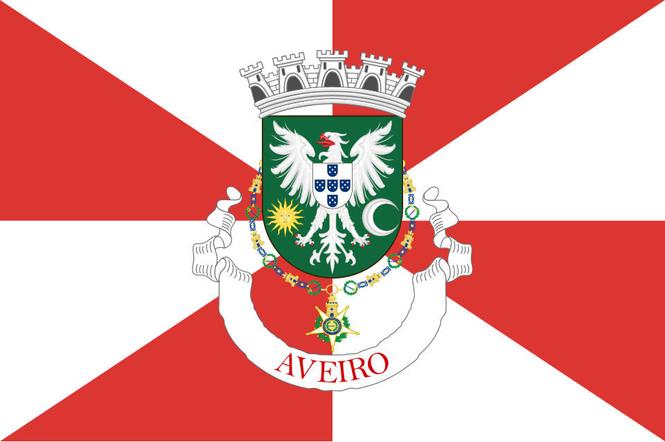
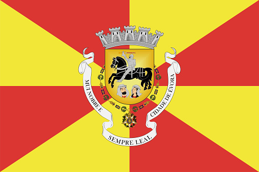
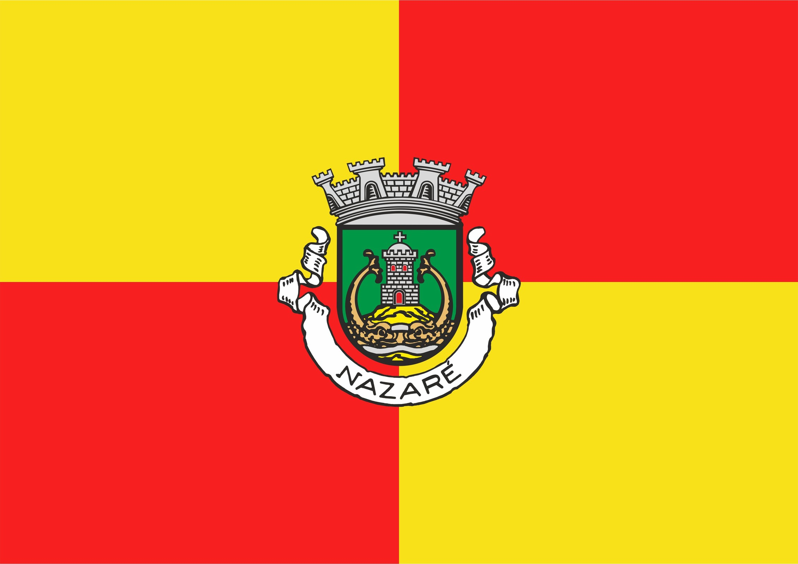
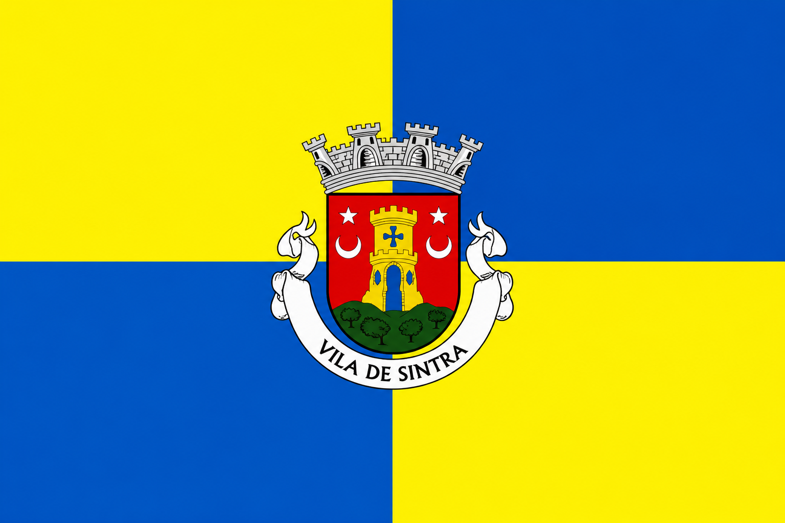
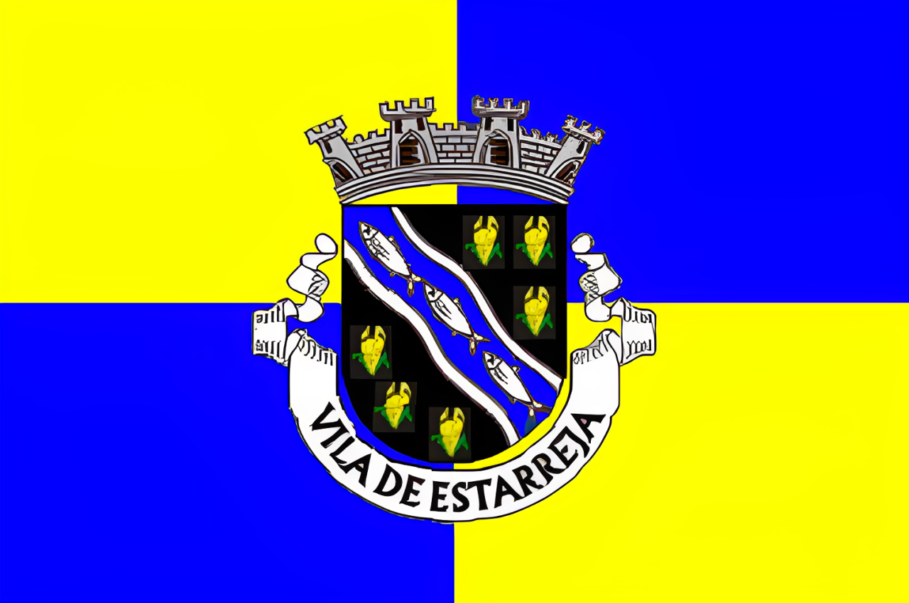
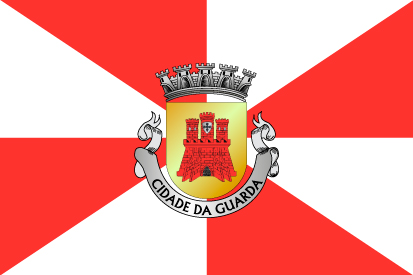
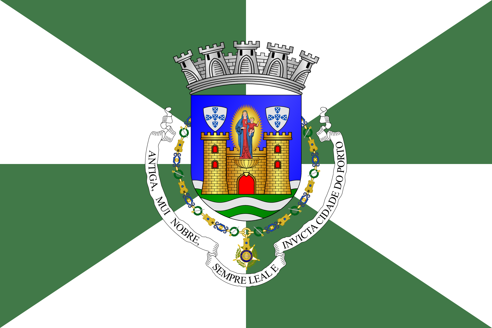

Um sistema generativo para reinterpretar visualmente diferentes localidades portuguesas.
O projeto explora a criação de novas bandeiras regionais através de um sistema que transforma características associadas a cada localidade numa composição visual.
Apesar de cada resultado possuir símbolos, formas e cores distintas, todas as bandeiras seguem uma linguagem comum, permitindo construir uma coleção visualmente coerente.
Cada bandeira parte da identidade de uma cidade ou região.
Características locais são convertidas em referências visuais e palavras-chave.
Regras comuns orientam a composição, a cor e a construção gráfica.
O processo origina uma interpretação visual distinta para cada localidade.





O projeto foi desenvolvido como uma experiência digital, combinando programação e inteligência artificial num processo capaz de gerar diferentes propostas a partir da informação associada a cada localidade.
O objetivo não é produzir uma solução definitiva para cada região, mas explorar como regras comuns podem gerar múltiplas identidades visuais dentro do mesmo sistema.






